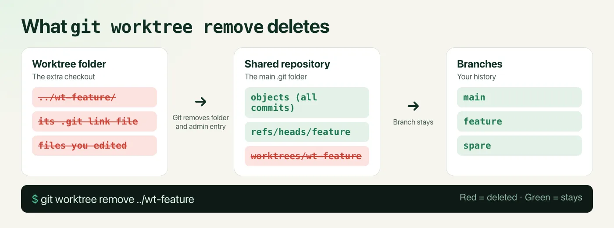
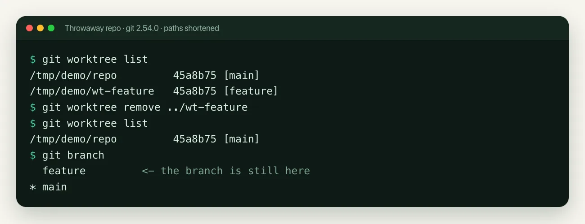
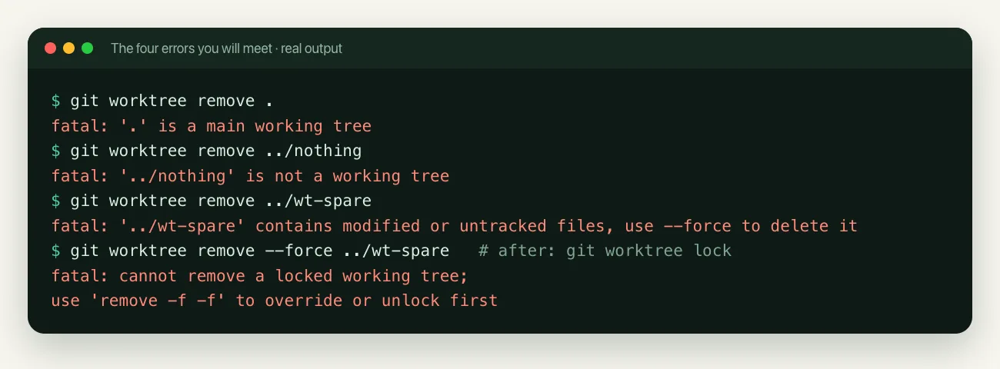
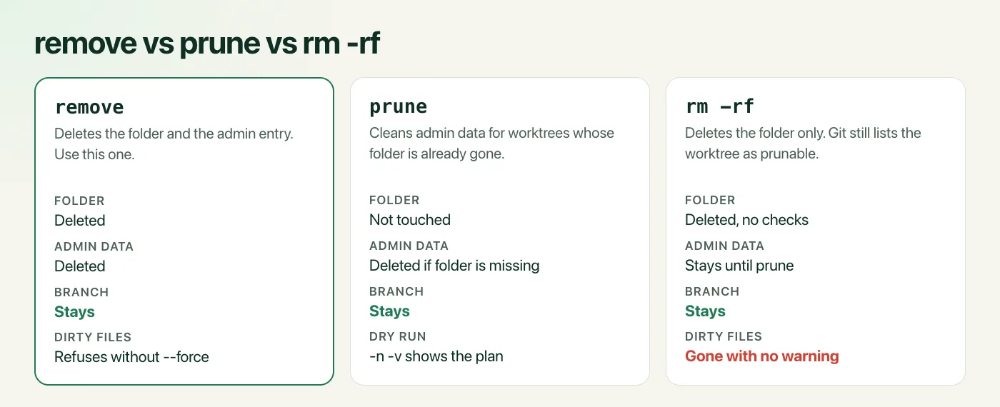
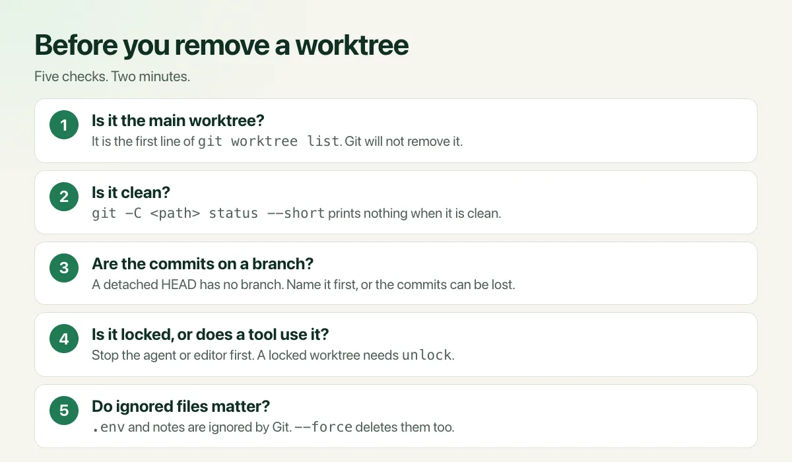
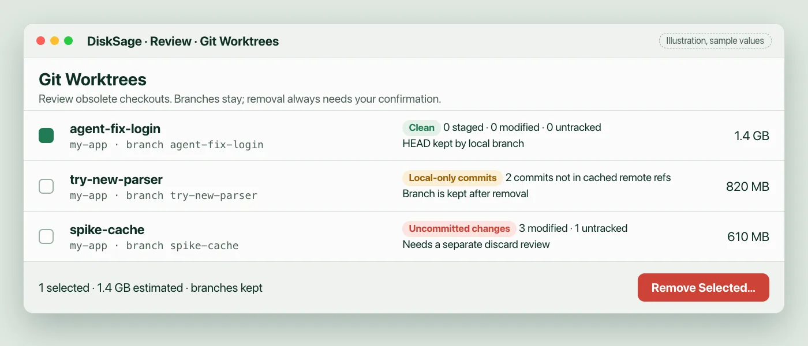

Developer tools · Git
Git worktree remove: delete the folder, keep the branch
Real output from a test repo. Remove vs prune, --force, locked worktrees, a safe loop for all of them, and the worktrees that AI agents leave on your disk.

git worktree remove deletes (red) and what stays (green).No. git worktree remove does not delete the branch. It deletes the worktree folder and the administrative files that Git keeps for it. The branch and its commits stay in the repository. The official git-worktree docs do not say that remove deletes a branch, and my test below confirms it.
Warning: a normal git worktree remove also deletes ignored files, such as .env or local notes. Git counts a worktree as clean when it has no untracked files and no changes to tracked files (git docs). Ignored files do not count, so Git does not stop you. Run git -C <path> status --short --ignored before every removal. Only clean worktrees can be removed. The main worktree cannot be removed. This guide covers the errors you will see, prune, --force, locks, and a loop to remove many worktrees. If you run long AI coding agent sessions across worktrees on macOS, Nightcap Awake keeps your Mac awake while agents run (see how Nightcap Awake compares to Amphetamine and caffeinate), and DiskSage (my open source Mac app) lets you review leftover worktrees before removing them.
Does git worktree remove delete the branch?
I ran this in a throwaway repo with Git 2.54.0. The worktree wt-feature is on the branch feature.

feature is still there.To remove a worktree and keep its branch, run one command:
git worktree remove ../wt-featureRun it from the main repository or from another worktree. Use the path of the worktree, as git worktree list shows it.
git worktree remove errors and fixes

'.' is a main working tree: you tried to remove the main worktree. Git does not allow it. This is the first line ofgit worktree list.is not a working tree: the path is wrong. Copy it fromgit worktree list.contains modified or untracked files, use --force to delete it: the worktree is not clean. Commit or save the work first. See --force.cannot remove a locked working tree: the worktree has a lock. Rungit worktree unlock <path>. See locked worktrees.failed to delete: Git could not delete a file. In my test, a read-only folder inside the worktree gavePermission denied. Change the permissions and run the command again. If the message saysDirectory not empty, a program may still write into the folder. Stop that program and try again.
git worktree remove vs prune

remove checks for unsaved work.The docs say prune removes the information in $GIT_DIR/worktrees for worktrees whose working trees are missing. Use remove next time you want to delete one. If you delete the folder by hand, Git marks the worktree as prunable:
$ rm -rf ../wt-three
$ git worktree list
/tmp/demo/repo 4341ca9 [main]
/tmp/demo/wt-three 4341ca9 [agent-three] prunable
$ git worktree prune -n -v
Removing worktrees/wt-three: gitdir file points to non-existent location
$ git worktree pruneThe -n flag is a dry run. Git also prunes stale entries on its own after a time that gc.worktreePruneExpire sets.
git worktree remove --force: when it is dangerous
Without --force, Git refuses to remove a worktree that has modified tracked files or untracked files. With --force, Git deletes them. You cannot get them back from Git, because they were never committed. Git also removes worktrees with submodules only with --force, per the docs.
Files that .gitignore hides, such as .env or local notes, are not in any commit. Git deletes them even without --force, because they do not make a worktree dirty. I tested it on Git 2.54: a worktree with only an ignored .env showed an empty status, and git worktree remove deleted it with the file. Before any removal, run git -C <path> status --short --ignored and copy what you need.

How to remove a locked git worktree
A lock protects a worktree from being pruned, moved or deleted. The docs say to specify --force twice to remove a locked worktree. The safer way is to unlock it first:
- Find out who locked it:
git worktree list --porcelainshowslockedand the reason. - Stop the tool that uses the worktree.
- Run
git worktree unlock <path>. - Run
git worktree remove <path>.
How to remove all git worktrees
The first record in git worktree list --porcelain is the main worktree. This loop skips it. It also skips every worktree that has changed, untracked or ignored files, because a normal remove deletes ignored files too. It does not use --force:
git worktree list --porcelain | awk '/^worktree /{print substr($0,10)}' | tail -n +2 |
while IFS= read -r wt; do
if [ -n "$(git -C "$wt" status --porcelain --ignored)" ]; then
echo "skipped $wt: it has changed, untracked or ignored files"; continue
fi
git worktree remove "$wt" && echo "removed $wt"
doneI tested it with three worktrees. One had an untracked file, and one had only an ignored .env. Result:
removed /tmp/demo/wt-one
skipped /tmp/demo/wt-three: it has changed, untracked or ignored files
skipped /tmp/demo/wt-two: it has changed, untracked or ignored filesAll three branches were still there. For a dry run, replace the git worktree remove command with echo first.
Delete the branch after you remove the worktree
Use git branch -d first. It refuses to delete a branch that is not merged. Use -D only if you accept the loss of those commits:
$ git branch -d agent-one
Deleted branch agent-one (was 4341ca9).
$ git branch -d tmp
error: the branch 'tmp' is not fully merged
$ git branch -D tmp
Deleted branch tmp (was b081546).Git does not let you delete a branch that is checked out in a worktree. Remove the worktree first.
AI coding agents fill your disk with worktrees
Agents use worktrees to work in parallel. Claude Code creates them under .claude/worktrees/<name>/ on a branch named worktree-<name>, its docs say. The Codex app creates them in $CODEX_HOME/worktrees and, by default, keeps your 15 most recent ones. Each one is a full checkout, often with its own node_modules or build folder.
Note one difference. When you remove a worktree on exit, Claude Code deletes the worktree and its branch, if you choose removal. Core Git does not delete the branch.
To audit the worktrees of a repository, run:
git worktree list --porcelain
git worktree list --porcelain | awk '/^worktree /{print substr($0,10)}' |
while IFS= read -r wt; do du -sh "$wt"; doneLook for worktrees with a prunable or locked line, and for large ones. Claude Code holds a lock while an agent runs. Its docs say that a lock left by claude -p runs stays until a later sweep, or until you run git worktree unlock.
Review worktrees with DiskSage
Many repositories mean many commands. DiskSage is a macOS 14+ menu-bar app, free and open source (MIT). Its Git Worktrees review does the checks from the list above for you. I confirmed each point in the source code.

- Changed and ignored files: separate counts for staged, modified, conflicted, untracked and ignored files. You can read the ignored paths and sizes.
- Commit preservation check: it shows commits that are not in the cached remote refs, and whether a local branch or tag keeps them. A missing upstream shows as Unknown, not zero. Labels include Clean, Uncommitted changes, Local-only commits, Not proven merged, Detached, Locked, In use.
- Protection: main, locked, protected and active checkouts cannot be removed. You can also choose Keep this worktree.
- Removal keeps branches: it runs
git worktree removeon the exact path. It does not delete branches, unlock worktrees, run prune or clean up the repository. - You confirm: nothing is preselected. A confirmation lists the paths and the branches that stay.
Be clear about the limits. Removal is permanent. It deletes the checkout files, and DiskSage cannot undo it. Keeping a commit is not a backup of ignored or untracked files. The review is local and does not fetch, so remote facts can be stale. Worktrees are never part of automatic, scheduled or low-risk cleanup. Separately, the app's low-disk automatic cleanup is on by default at 15 GiB, and it deletes low-risk cache files permanently. See the Xcode cleanup guide for the review-only launch option.
There is no notarized installer. Build it from source with Xcode 27: git clone https://github.com/Abdo-codes/DiskSage.git, then ./Scripts/build-app.sh release, then open .build/release/DiskSage.app. Open Cleanup Review, Git Worktrees and add a repository or a projects folder.
Questions
Does git worktree remove delete the branch? No. It deletes the folder and the admin files. The branch and the commits stay.
How do I delete the branch too? Remove the worktree, then run git branch -d <name>. Use -D only for work you do not need.
What is the difference between remove and prune? remove deletes a worktree. prune only cleans admin data of worktrees whose folder is already gone.
How do I remove all worktrees? Use the loop above. It skips the main worktree and every worktree with changed, untracked or ignored files, and it does not force anything.
How do I remove a locked worktree? Unlock it, then remove it. Or use --force twice, if you know that no tool uses it.